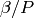
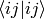

Integrals¶
Note
INSPECT and ORDER options currently make no sense.
- INTEGRAL
- Starts the integral block.
[Integral options—see below.]
- ENDINT
- End of integral block.
General options¶
- FREEZE [NFROZEN NTFROZEN]
- Set the number of frozen core states and frozen excited states respectively. Both must be a multiple of two - an error is returned if this is not the case. The Slater determinant space of a calculation does not include determinants which contain excitations from frozen core states or excitations to frozen excited states.
- FREEZEINNER [NFROZEN NTFROZEN]
- Default=.false.[0 0] Allows orbitals to be frozen ‘from the inside’. Meaning the NFROZEN occupied spin orbitals with the highest energy are frozen, along with the NTFROZEN lowest energy virtual spin orbitals. I.e. freezing from the fermi energy outwards. The main aim of this was to allow us to select an active space of HOMO and LUMO’s, and freeze these to find the energy contained in the orbitals outside the active space.
- PARTIALLYFREEZE [NPartFrozen NHolesFrozen]
Sets the number of spin orbitals in the partially frozen core, and the maximum number of holes that are allowed within this core. Excitations which remove more than NHolesFrozen from the core are forbidden. This is a parallel FCIMC option.
This option may be changed dynamically using PARTIALLYFREEZE [NPartFrozen NHolesFrozen] in the CHANGEVARS file. The partially frozen core may be completely unfrozen in this way by simply setting the NHolesFrozen = NPartFrozen.
- INSPECT [SPECDET(I), I=1,NEL-NFROZEN]
- Investigate the specified determinant.
- ORDER [ORBORDER(I), I=1,8)]
Set the prelimanary ordering of basis functions for an initial guess at the reference determinant. There are two ways of specifying open orbitals:
- If orborder2(I,1) is integral, then if it’s odd, we have a single.
- Non-integral. The integral part is the number of closed oribtals, and the fractional*1000 is the number of open orbitals. e.g. 6.002 would mean 6 closed and 2 open which would have orborder(I,1)=6, orborder(I,2)=4 but say 5.002 would be meaningless as the integral part must be a multiple of 2.
Density fitting options¶
- DFMETHOD [method]
control the Density fitting method. Possible methods are:
- DFOVERLAP
- (ij|u|ab)= (ij|u|P)(P|ab)
- DFOVERLAP2NDORD
- (ij|u|ab)= (ij|u|P)(P|ab)+(ij|P)(P|u|ab)-(ij|P)(P|u|Q)(Q|ab)
- DFOVERLAP2
- (ij|u|ab)= (ij|P)(P|u|Q)(Q|ab)
- DFCOULOMB
- (ij|u|ab)= (ij|u|P)[(P|u|Q)^-1](Q|u|ab)
where the sums over P and Q are implied.
All methods are precontracted to run in order(nBasis) except DFOVERLAP2NDORD.
- DMATEPSILON DMatEpsilon (default 0)
- The threshold for density matrix elements, below which small density matrix elements are ignored, and conequently speeds up calculations.
Hartree–Fock options¶
The Hartree–Fock options have only been tested for molecular and model systems. They allow the Hartree-Fock orbitals (in the space of the original basis) to be used in a graph calculation instead of the original basis.
Note
James has never used these options. Please can those who have document them in more detail.
- HF
- Use a Hartree–Fock basis.
- CALCULATE
- Calculate the Hartree–Fock basis rather than reading it in. By default, the Hartree–Fock calculation is performed before any freezing of orbitals, i.e. in the full original basis.
- HFMETHOD [HFMETTHOD]
Default: SINGLES.
Specify the method for the Hartree-Fock routine. Options are:
- STANDARD
- Use normal Hartree–Fock process.
- DESCENT [SINGLES, OTHER]
- Use singles or other gradient descent.
- MODIFIED
- Modify virtuals. Experimental.
- MAXITERATIONS [NHFIT]
- Set the maximum number of Hartree–Fock iterations.
- MIX [HFMIX]
- Set the mixing parameter for each Hartree–Fock iteration.
- POSTFREEZEHF
- Do Hartree–Fock after freezing instead of before (still needs HF and CALCULATE). The Hartree–Fock calculation is performed only in the space of the unfrozen orbitals.
- RAND [HFRAND]
Default 0.01.
Set the maximum magnitude of the random numbers added to the starting density matrix. Use to perturb away from an initially converged Hartree–Fock solution.
- READ [MATRIX BASIS]
- Read in U matrix and/or Hartree–Fock basis in terms of the original basis.
- RHF
- Use restricted Hartree-Fock theory.
- THRESHOLD [ ENERGY [HFEDELTA] ORBITAL [HFCDELTA] ]
- Set the convergence threshold for the energy and/or the orbitals.
- UHF
- Use unrestricted Hartree-Fock theory.
Partioning options¶
If the weight and energy contribution from a graph are evaulated from
diagonalising the  matrices, then various schemes are
available to deal with the
matrices, then various schemes are
available to deal with the  operator.
operator.
Note
More detail on these needed.
- FOCK-PARTITION
- For calculation of operator with the Trotter
approximation, partition the Hamiltonian according to the N-electron
Fock operator and Coulomb perturbation.
- FOCK-PARTITION-LOWDIAG
- For calculation of operator with Trotter approximation,
partition the Hamiltonian according to the N-electron Fock operator
and coulomb perturbation. Take just the first order approximation
(i.e. ignore the  term) for the diagonal terms of the
matrix.
- FOCK-PARTITION-DCCORRECT-LOWDIAG
- For calculation of operator with Trotter approximation,
partition the Hamiltonian according to the N-electron Fock operator
and Coulomb perturbation. Remove the Coulomb double counting in the
Fock operator.Take just the first order approximation (i.e. ignore
the term) for the diagonal terms of the
matrix.
- DIAG-PARTITION
Default partitioning scheme.
For calculation of
operator with Trotter approximation,
partition the Hamiltonian as the diagonal and non-diagonal matrix
elements between the determinants.- RHO-1STORDER
- Calculate rho elements to only 1st order Taylor expansion (without applying a Trotter approximation).
VASP and CPMD options¶
There are too many 2-electron integrals to store for periodic systems (CPMD or VASP based calculations). Instead, as many integrals as possible are cached. Each four-index integral is reduced to two indices, A and B. Each A index has so many slots associated with it in which the integral involving A and B can be stored. The cache stores as many integrals as possible. If the cache is full and a new integral is calculated, then an element in the cache is over-written.
The efficiency of a calculation is heavily dependent on the size of the integral cache.
- UMATCACHE [SLOTS] [nSlots]
Default nSlots=1024.
Set the number of slots for each A index.
The total amount of memory used by the cache will be in the order of NSLOTS*NSTATES*(NSTATES-1)/2 words.
If nSlots=0, then disable caching of integrals calculated on the fly, but retain precomputation of 2-index 2-electron integrals ( and
 .
.If nSlots=-1, no 2-electron integrals are stored.
Disabling the cache is very expensive.
The keyword SLOTS is optional and is present to contrast with the MB keyword.
- UMATCACHE MB [MB]
- Number of megabytes to allocate to the UMAT cache. The number of slots is then set accordingly.
- NOUMATCACHE
- Disable all UMAT caching (idential to UMATCACHE -1).
Experimental options¶
Note
Please document in more detail!
- NRCONV [NRCONV]
Default
 .
.This sets the convergence criteria for the Newton-Raphson algorithm in findroot. This takes place after initial bounds for the root are calculated using regular falsi (see above). Values smaller than
 tend to create a fault since the Newton-Raphson
algorithm cannot converge given the number of iterations allowed.
tend to create a fault since the Newton-Raphson
algorithm cannot converge given the number of iterations allowed.- NRSTEPSMAX [NRSTEPSMAX]
- This sets the maximum number of Newton Raphson steps allowed to try and converge upon a root to the accuracy given in NRCONV. This is only applicable for the star graph, when trying to find the roots of the polynomial using POLY NEW, POLY OLD or POLYCONVERGE. Default value is 50.
- RFCONV [RFCONV]
Default
 .
.Set the convergence criteria for the Regular falsi algorithm in findroot. Only used with a star calculation which involves calculating the roots of a polynomial to find the eigenvalues. A Newton-Raphson convergence takes place after.
- INCLUDEQUADRHO
- This changes the rho matrix for stars so that it includes the square of the eigenvalues - rho -> rho + rho^2/2. This is in an attempt to improve size consistency for the star graph. No change for large beta, and only very small changes for smaller betas.
- EXPRHO
- The rho matrix is exponentiated, 1 is subtracted, and this is used as the matrix to be diagonalised. This is the full expansion for which INCLUDEQUADRHO is a truncation. Again, this is used to achieve size consistency with the star, although seems to have little effect, and no effect at high beta.
- DISCONNECTNODES
- If using a nodal approximation, the connections between determinants in the same nodes are ignored - should then be equivalent to the original star calculation.
- CALCEXCITSTAR
- Used with STARSTARS, it explicitly calculates each excited star and diagonalises them seperatly. This removes the approximation of cancelling ficticious excitations if the original star is used as a template for higher excitations. Scaling is bad, and all matrix elements have to be calculated exactly.
- STARNODOUBS
- Only to be used with CALCEXCITSTAR when explicitly calculating excited stars, it forbids the excited stars to have excitations which are double excitations of the Hartree–Fock determinant.
- STARQUADEXCITS
- Only to be used with CALCEXCITSTAR, when calculating the excited stars, it only allow the excited stars to have excitations which are quadruple excitations of the Hartree–Fock determinant.
- QUADVECMAX
- Used with STARSTARS, it uses only the largest first element of the eigenvectors as the connection to each excited star. This means that for each excited star, only one connection is made back to the original star, meaning that the scaling is reduced. This seems to be a good approximation.
- QUADVALMAX
- Same as QUADVECMAX, only the largest eigenvalue for each excited star is used. Seems to be little difference in results.
- DIAGSTARSTARS
- Used with STARSTARS, it performs a full diagonalisation on each excited star, using the original star as a template, i.e. same excitations, and same offdiagonal elements. All that occurs is that the diagonal elements are multiplied by rho_jj. Large Scaling.
- EXCITSTARSROOTCHANGE
- Used with DIAGSTARSTARS only at the moment, when this is set, only the root element of the excited star matrices changes when constructing excited stars with roots given by rho_jj. The remainder of the excited star matrix is identical to the original star matrix.
- RMROOTEXCITSTARSROOTCHANGE
- Another option for use with DIAGSTARSTARS, when this is set, the same occurs as for EXCITSTARSROOTCHANGE, apart from the fact that the root is removed as an excited determinant in each excited star.